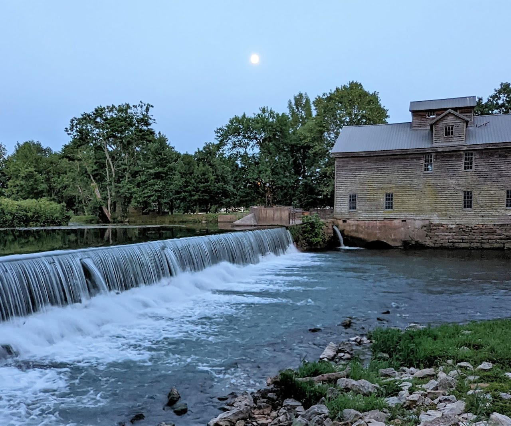
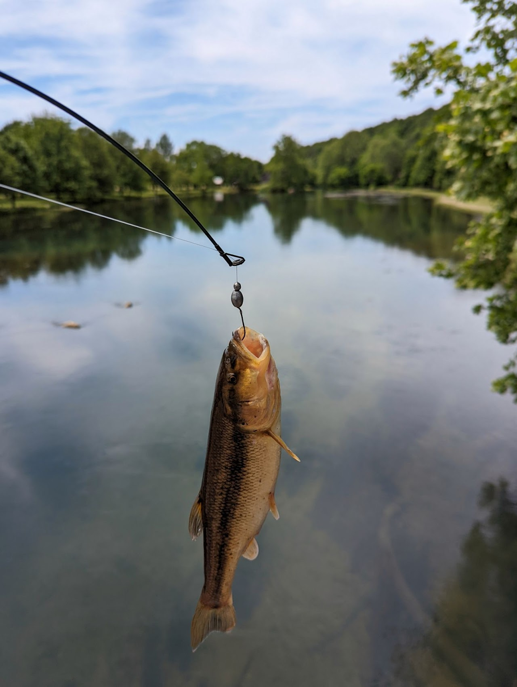
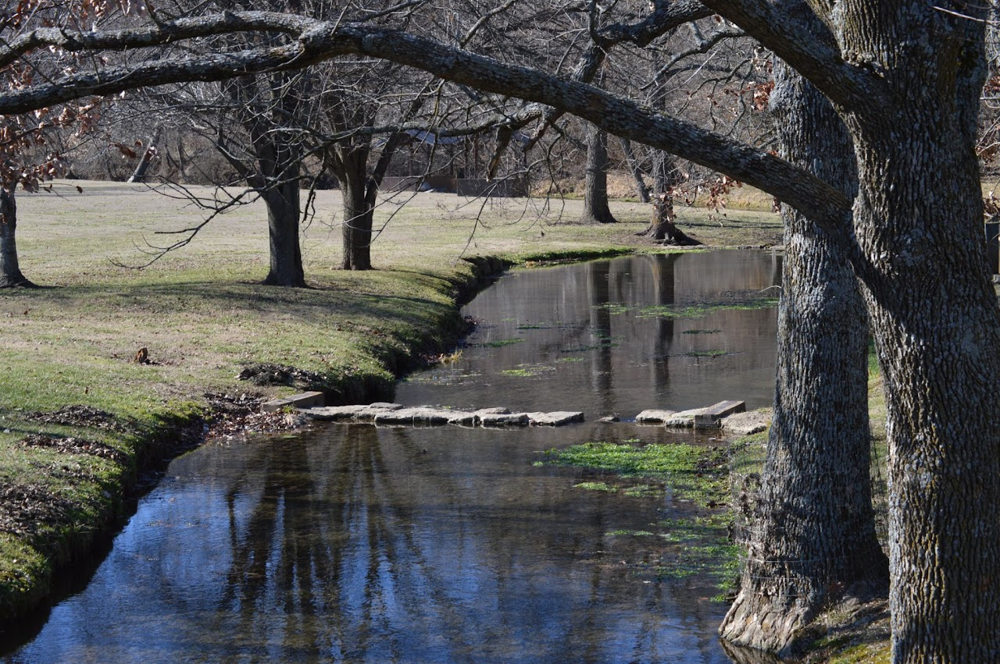

History Welcomes You
Jolly Mill Park is a private historical park open to the public for recreation. It is not part of a state or local recreation/conservation program.
The mill is also a nice fishing location, managed by the Missouri Department of Conservation as a Capps Creek White Ribbon Trout Area. Four miles of stream are stocked with fish periodically, and fishermen are seasonally permitted to harvest up to 4 trout per day. Bass also call the creek home.
The mill is also a nice fishing location, managed by the Missouri Department of Conservation as a Capps Creek White Ribbon Trout Area.
History Welcomes You
Jolly Mill Park is a private historical park open to the public for recreation. It is not part of a state or local recreation/conservation program.
Because of its rich history and importance to the culture of Southwest Missouri, Jolly Mill is listed in the National Register of Historic Places. But that doesn't mean you can't have fun here. The park is full of picnic tables, playgrounds, and time-period buildings to explore. There are also many organized events that take place throughout the year.
The mill is also a nice fishing location, managed by the Missouri Department of Conservation as a Capps Creek White Ribbon Trout Area. Four miles of stream are stocked with fish periodically, and fishermen are seasonally permitted to harvest up to 4 trout per day. Bass also call the creek home.
Jolly Mill was originally built in 1848 to serve as a whiskey distillery. The success of the mill by the 1850s led to the establishment and subsequent growth of the town of Jollification. The town was burned during the Civil War and was somewhat rebuilt, but the mill survived intact. But in 1870, the railroad bypassed what was left of Jollification, which ultimately led to its dissolution. The mill soon after reduced its function as a distillery and transitioned into a grist mill, continuing to operate in that capacity until 1973.
The mill was purchased in 1983 by the 501(c)(3)c non-profit Jolly Mill Foundation. Since then, under the care of “The Friends of Jolly Mill,” the Mill and surrounding land has undergone substantial restoration, primarily converting it into a public family-friendly park, with many period buildings moved in from other locations in an attempt to replicate the look and feel of the town of Jollification.
Because of its rich history and importance to the culture of Southwest Missouri, Jolly Mill is listed in the National Register of Historic Places. But that doesn't mean you can't have fun here. The park is full of picnic tables, playgrounds, and time-period buildings to explore. There are also many organized events that take place throughout the year.
Because of its rich history and importance to the culture of Southwest Missouri, Jolly Mill is listed in the National Register of Historic Places.